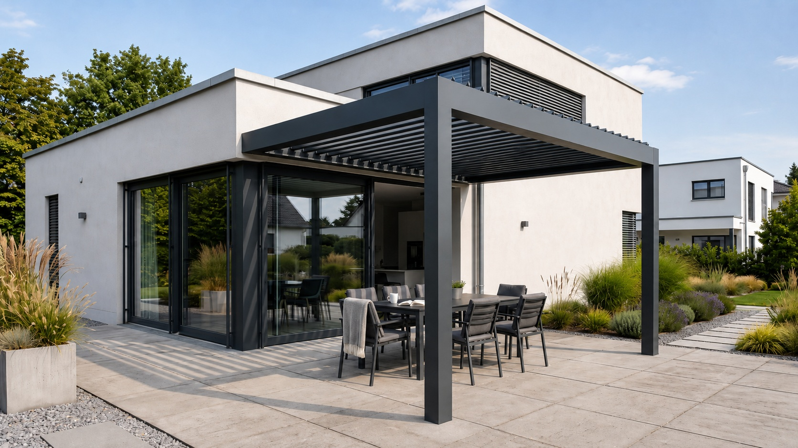

Pergole
bioklimatyczne
Dach, który myśli o pogodzie.
Obrotowe lamele otwierają taras na słońce albo szczelnie zamykają go przed deszczem. Woda spływa ukrytymi rynnami w słupach, a przestrzeń pod dachem pozostaje sucha przez cały rok.
- lamele obrotowe 0–90°
- odprowadzenie wody w słupach
- konstrukcja aluminiowa na wymiar
